10 教育とジェンダー
10.1 学習目標
- ジェンダーギャップの世界的な現状を、データを通じて客観的に把握する。
- 男女の学力・非認知能力の違いについて、教育経済学の実証研究が何を明らかにしているかを理解する。
- 別学と共学に関する実証研究を通じて、「相関と因果」を区別して考える習慣を身につける。
- 男女賃金格差の現状とその経済学的説明（嗜好的差別・統計的差別・買い手独占的差別）を理解する。
- 日本女性のキャリア中断（M字カーブ）の構造を理解し、政策的対応（クオータ制・アファーマティブ・アクション）の意義と限界を考える。
10.2 世界の教育とジェンダー
ジェンダー格差のデータベース
教育とジェンダーに関するデータは、国際機関を中心に多数が公開されています。主なデータベースを以下に整理します。
世界銀行・国連系
- World Bank Gender Data Portal：初等・中等・高等教育の就学率を男女別に閲覧可能
- UNESCO Institute for Statistics (UIS)：Gender Parity Index（GPI）など
- UNICEF Gender Disparities in Education
- UNESCO GEM Report：毎年発行の包括的な教育報告書
- UNDP Gender Inequality Index
OECD系
- Education at a Glance：加盟国の教育統計を網羅
- PISA Database：15歳の学力調査（読解・数学・科学）
- OECD Gender Dashboard
その他
いくつか例として見てみましょう。
Gender gap in primary, secondary and tertiary education, World
Average performance of 15-year-old girls and boys in mathematics, 2022
Average performance of 15-year-old girls and boys in reading, 2022
World Inequality Database on Education
世界のジェンダー格差の現状
UNESCO が（ほぼ）毎年発行している世界の教育に関する現状をまとめたレポート（Global Education Monitoring Report：GEM Report）が別冊としてまとめた Gender Report から、世界の状況を紹介します。
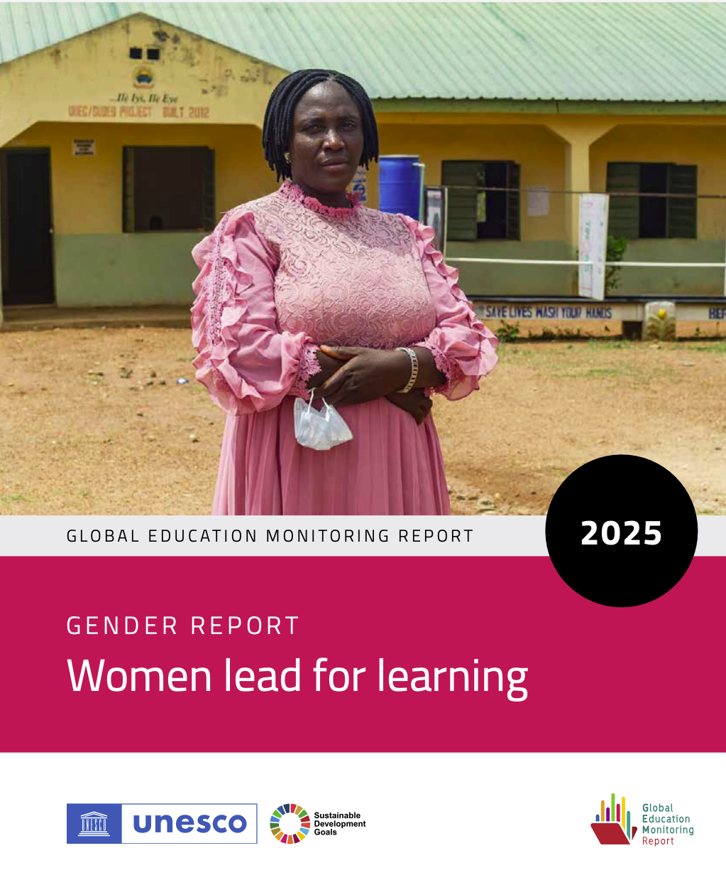
以下では、同レポートの主要な図を紹介します。
Figure 1 就学していない子どもの男女差
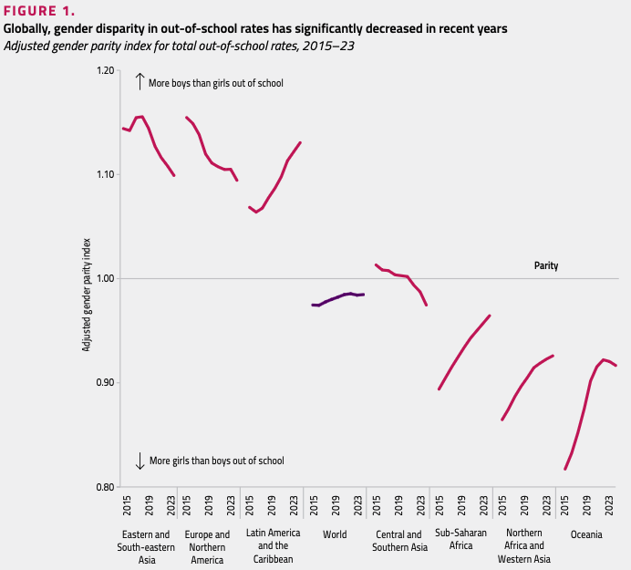
「学校に通えていない子ども」の男女差は、地域によって大きく異なります。サブサハラ・アフリカでは依然として女子が不利な状況にあり、教育機会へのアクセス格差が残っています。一方、ラテンアメリカ・カリブ地域では男子の方が学校に通っていない割合が高くなっています。教育格差はもはや「女子が不利」という単純な構図ではなく、地域によって方向が異なります。SDGs達成のためには「誰が取り残されているのか」を地域ごとに正確に把握したうえで政策を立案することが不可欠です。
Figure 2 修了率の男女差
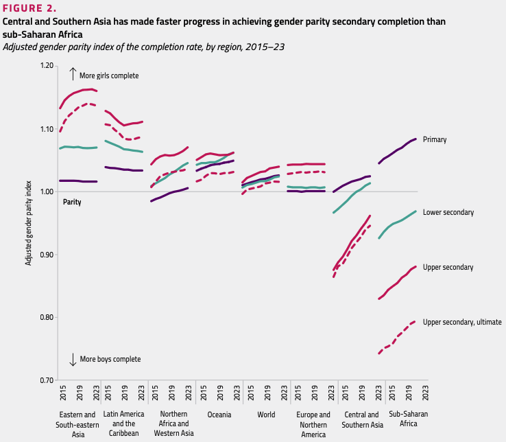
就学率だけでなく、実際に教育課程を修了できるかどうかにも男女差が存在します。中央・南アジアでは大きな改善がみられる一方、サブサハラ・アフリカでは改善速度が遅い状況です。教育へのアクセスが確保されても、途中退学や学習継続の困難が残る場合があります。女子の修了率向上には、経済的支援や早婚防止など教育以外の政策も重要です。
Figure 5 高等教育と職業教育の男女差
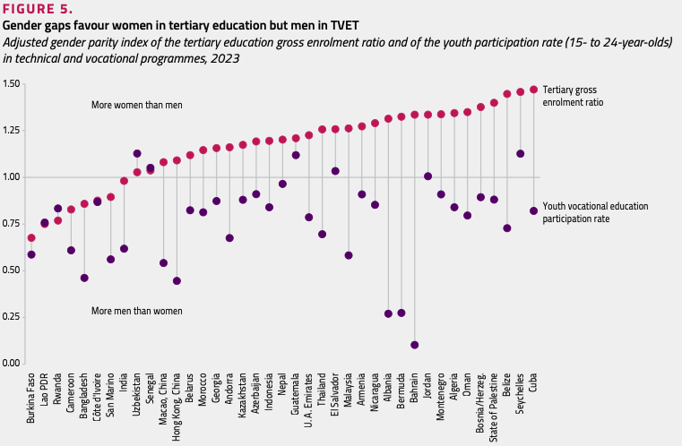
多くの国で、高等教育では女性が多数派となっています。一方、職業教育（TVET）では男性の割合が高い傾向がみられます。男女差の問題は、「教育を受けるかどうか」から「どのような教育を選択するか」へと移行しつつあります。労働市場における男女格差の一部は、この教育選択の違いによって説明できる可能性があります。
Figure 7 読解力・数学の男女差（最低習熟度達成率）
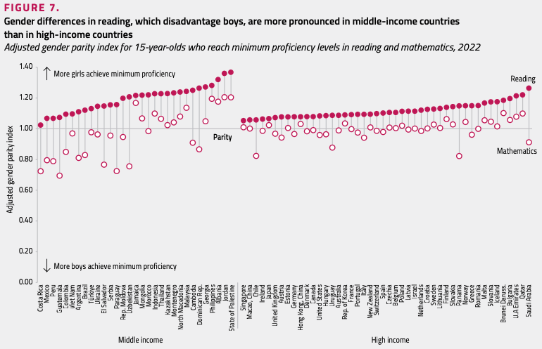
この図は、15歳の生徒が読解力（●）と数学（○）でそれぞれ最低習熟度に達する割合のGPIを示しています。読解力ではほぼすべての国・地域で女子が男子を上回っており、特に中所得国でその差が大きくなっています。一方、数学では国によって方向が異なり、男子が有利な国（チリ・イングランド・イタリア・ニュージーランドなど）がある一方で、女子が有利な国も存在します。「女子は理系が苦手」という固定観念とは対照的に、基礎学力の面では女子が優位な分野もあり、近年では男子の読解力向上が政策課題として注目されています。
Figure 9 数学の男女差（TIMSS 2023・中学2年生）
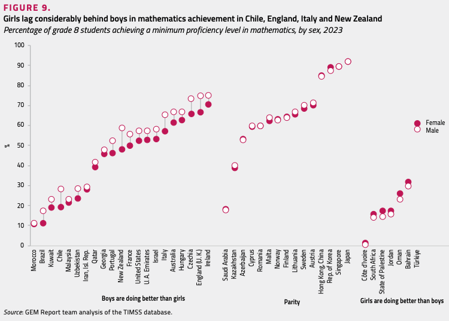
この図は2023年のTIMSS（中学2年生）の結果をもとに、数学の最低習熟度を達成した生徒の割合を男女別に示しています。多くの国では男女がほぼ同水準ですが、チリ・イングランド・イタリア・ニュージーランドでは女子が男子を大きく下回っており、COVID-19が女子の数学学力により大きな負の影響を与えた可能性が示されています。一方、コートジボワール・南アフリカ・ヨルダン・オマーン・バーレーンなどでは逆に女子が優位です。数学の男女差が国・文化によって方向まで異なることは、その差が生物学的要因のみでは説明できないことを示しており、STEM分野への進学格差は数学能力そのものよりも進路選択の問題である可能性が高いといえます。
Figure 13 いじめ被害の男女差（2018年→2022年）
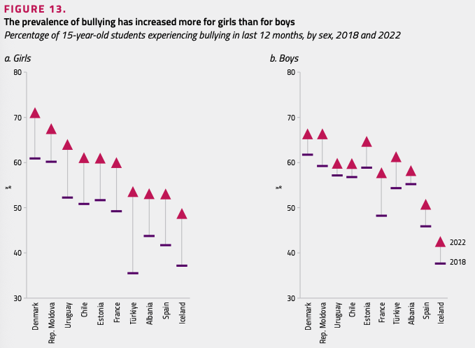
この図は、15歳の生徒がいじめを経験した割合を2018年と2022年で比較したものです。デンマーク・モルドバ・ウルグアイ・チリ・エストニア・フランスなど多くの国で、女子のいじめ被害率は2018年から2022年にかけて増加（上向きの矢印）している一方、男子の変化は国によってまちまちです。GEM Reportによれば、2018年から2022年の間に、いじめ経験率が増加したのは66か国中女子で34か国、男子で22か国でした。また別途の調査では、女子は男子よりもサイバーいじめを受ける頻度が高く、その背景にはソーシャルメディア利用時間の長さがあると考えられています。学校の安全性とウェルビーイングは学習成果に直接影響するため、デジタル社会に対応した新しい教育課題として重要性が高まっています。
Figure 15・17 女性校長・女性議員割合
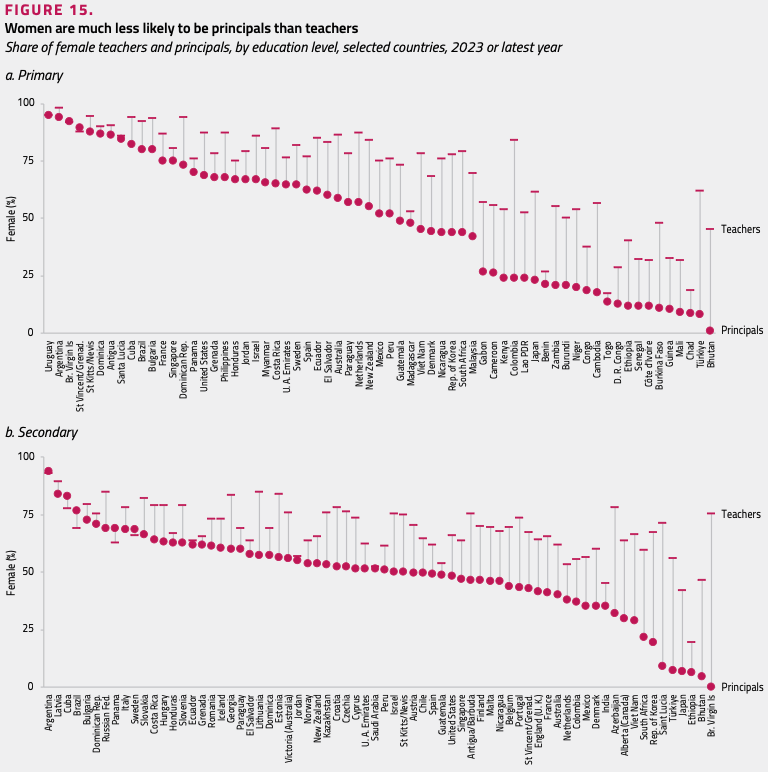
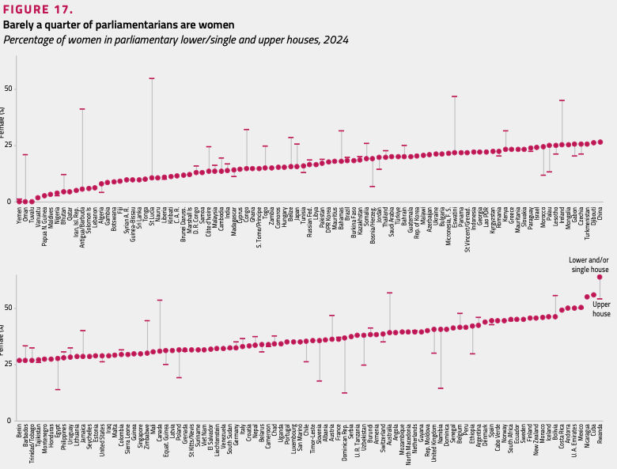
Figure 15は、初等・中等教育段階における女性教員（●上段）と女性校長（●下段）の割合を国別に示しています。ほぼすべての国で女性教員の割合は高いにもかかわらず、校長職では女性の割合が大幅に低下しています。例えばウルグアイでは女性教員が約95%を占める一方、女性校長は約60%程度にとどまり、アフリカ諸国では女性校長が10〜20%台の国も多くあります。教育分野においても「ガラスの天井（Glass Ceiling）」が存在することを明確に示しています。Figure 17は国会議員（下院・一院制）に占める女性の割合で、世界平均は約27%にとどまっています。研究では女性議員比率の上昇が教育支出の増加と関連することが報告されています。
Figure 20 協働的リーダーシップ——女性校長の方が協働的学校文化を重視
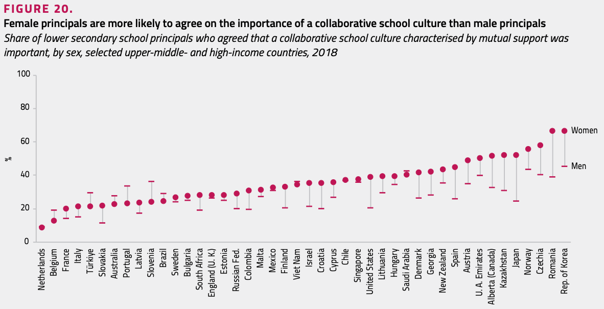
Figure 20は、中等学校の校長が「相互支援を特徴とする協働的学校文化が重要だ」と回答した割合を男女別に示しています。ほぼすべての国で女性校長（●）の割合が男性校長（−）を上回っており、女性リーダーは協働的な意思決定をより重視する傾向があることが示されています。
GEM Reportはさらに、女性リーダーが教育成果に与える正の影響を複数の実証研究から示しています。ミャンマーでは女性校長の学校で最大4か月分、カンボジアでは5か月分、ラオスでは6か月分の学習成果向上が確認されました。また、COVID-19期には女性閣僚の割合が13ポイント高い国ほど学校閉鎖期間が24%短かったという報告もあります。女性リーダーの存在は、学校運営の質と社会的危機への対応力の両面でプラスの効果を持つ可能性があります。
UNESCO GEM Gender Report 2025 の主なメッセージ（Key Messages）
ここまで個別の図を通じて現状を確認しました。GEM Report 2025が示す主なメッセージを整理します。
① 教育参加における男女格差は平均的には縮小しているが、多くの地域では依然として大きい
サブサハラ・アフリカでは中等教育修了率の男女格差が依然として大きく、過去10年間の改善速度は中央・南アジアの半分程度にとどまっています。ラテンアメリカ・カリブ地域では逆に男子の方が学校に通っていない割合が高く、2015年に女子100人に対して男子107人だった比率が2023年には113人へと拡大しています。
② 職業教育と高等教育では男女格差の方向が逆転している
高等教育では女性が優位な国が多い一方、職業教育（TVET）では男性が優位です。低所得国では成人教育・訓練への参加が男性100人に対して女性50人にとどまり、高所得国では逆に女性100人に対して男性73人となっています。約40か国のデータでは、大学には女性100人に対して男性約80人、職業教育には男性100人に対して女性約80人が在籍しています。
③ 学習成果における男女格差は依然として存在する
読解力では、世界全体で最低到達水準に達する男子は女子100人に対して87人、中所得国では72人にとどまります。数学では過去20年間おおむね男女同等の水準が維持されてきましたが、2023年のTIMSS結果はCOVID-19が女子の数学学力により大きな負の影響を与えた可能性を示しており、ブラジル・チリ・イングランド・イタリア・ニュージーランドでは女子が不利な格差が顕著でした。
④ いじめは女子の間でより急速に増加しており、女子はサイバーいじめに対してより脆弱である
2018年から2022年の間に、いじめ経験率は66か国中34か国で女子において増加しましたが、男子で増加したのは22か国でした。42か国を対象とした研究では、女子は男子よりもサイバーいじめを受ける頻度が高く、その背景には女子のソーシャルメディア利用時間の長さがあると考えられています。
⑤ 教員の大多数は女性であるが、教育リーダー職は依然として男性中心である
- 初等教育：フランス語圏アフリカ14か国では2019年時点で女性校長の割合はわずか16%（ギニア10%、ブルキナファソ11%）。カンボジア・ラオス・マレーシアでは女性校長の学校に在籍する小学5年生の割合はそれぞれ18%・25%・41%にとどまっています。
- 中等教育：世界全体で中等教育教員の57%は女性ですが、データのある70か国では校長職における男女格差が20ポイントに及んでいます。
- 高等教育：女性は学術スタッフの45%を占めますが、高等教育機関のリーダー職（学長等）は30%未満。2025年時点で世界トップ200大学のうち女性学長が率いる大学は27%にとどまります。
- 教育大臣：2010〜2023年の間、教育・高等教育大臣の約27%が女性で、女性大臣の在任期間は男性より4か月長い傾向がありました。
⑥ 女性リーダーは包摂的・エンパワリング・協働的な実践をとりやすく、教育成果向上に貢献している
女性校長は男性校長に比べて、教育へのアクセス・ジェンダーに基づく暴力・安全な交通手段・生理教育など、女子に不均衡な影響を与える課題に優先的に取り組む傾向があります（包摂的）。TALIS 2018のデータによれば、女性校長は授業・カリキュラム・保護者・生徒との関わりに多くの時間を充て、男性校長は管理・規律業務を優先する傾向があります（エンパワリング）。また女性校長の36%が協働的学校文化を重要視すると答えており、男性校長の28%を上回ります（協働的）。
学習成果への影響としては、ベナン・マダガスカル・セネガル・トーゴでは女性校長の学校の方が読解・数学成績が1年分の追加学習に相当するほど良好でした。東南アジアでは女性校長の学校でミャンマー最大4か月分・カンボジア5か月分・ラオス6か月分の学習向上が確認されました。政治の場では、COVID-19期に女性閣僚の割合が13ポイント高い国ほど学校閉鎖期間が24%短く、高所得国19か国では女性議員比率が1ポイント上昇するたびに教育支出がGDP比0.04ポイント増加する傾向が確認されています。
⑦ 固定観念（ステレオタイプ）が女性の志や機会を制約している
リーダーシップは依然として「男性的資質」とみなされることが多く、女性はリーダー職を目指すうえで十分な支援を得られません。フランスでは女性科学者による1時間の講演を受けた高校生女子のSTEM分野進学率が3.4ポイント上昇しており、ロールモデルの効果が示されています。校長採用では選考委員会が男性中心の場合に性別バイアスが生じやすく、GEM Reportの分析では校長選考において男女均衡を促進する政策を持つ国はわずか11%でした。サブサハラ・アフリカの調査では、メンター不足（28%）・ネットワーク形成機会の不足（22%）・研修・能力開発機会の不足（24%）が女性リーダーシップの主要な障壁として挙げられました。
（出典：UNESCO GEM Gender Report 2025, Key Messages）
日本のジェンダーギャップ
ジェンダーギャップ指数（GGI）
世界経済フォーラム（WEF）が毎年発表するジェンダーギャップ指数（Gender Gap Index: GGI）は、「経済的参加及び機会」「教育達成度」「健康と生存」「政治的エンパワーメント」の4分野で男女格差を測定したものです（0＝完全不平等、1＝完全平等）。
2022年の報告書では146か国中116位であった日本は、2023年には125位へと後退しました。分野別に見ると、日本の特徴が明確になります。教育の指数は0.97とほぼ平等に近い水準にあります。健康の指数も0.97で問題はほとんどありません。一方、経済の指数は0.56、政治の指数は0.06と極めて低い水準にあります（佐野 第5章）。
つまり、日本のジェンダーギャップは「学校教育の中では見えにくく、労働市場と政治の場で顕著に現れる」という構造的な特徴を持っています。学校で男女がほぼ平等な教育を受けながら、卒業後の社会では大きな格差が生じるというこのパターンは、教育経済学が解明すべき重要な謎でもあります。
（出典：佐野 第5章 第3節、pp.224–229）
あなたが最も驚いたデータはどれか？
個人ワーク（3分）
ここまで見てきた世界と日本のジェンダーギャップに関するデータのうち、あなたが最も驚いた（あるいは意外だと感じた）データを一つ選んでください。
- それはどのデータですか？
- なぜ驚きましたか？（どんな先入観と違いましたか？）
ペアワーク（3分）
お互いの選んだデータと理由を共有しましょう。
考え方の整理
このActivityで大切なのは「正解を答えること」ではなく、自分の先入観（ステレオタイプ）に気づくことです。
よく話題になる気づきの例：
- 「女子が不利」だと思っていたが、ラテンアメリカでは男子が学校に通えていないケースが多い
- 日本の教育分野のジェンダーギャップ指数は高いのに、経済・政治では世界最低水準
- 教員の多数は女性なのに、校長は男性が多い（「ガラスの天井」の存在）
- 読解力では女子が優位なのに、「女子は文系」という固定観念が根強い
データを見る際には、「どの国の、どの段階の、何の指標か」を常に確認することが重要です。「女子が不利」「男子が不利」という単純な二項対立ではなく、文脈を読む力を養うことが教育経済学では求められます。
10.3 男女の学力・非認知能力の違い
学力の男女差——データが示すこと
「男子は理系、女子は文系」という固定観念は広く浸透しています。しかしデータはどう示しているのでしょうか。
PISAの結果から
OECDのPISA（Programme for International Student Assessment）は、15歳を対象とした国際学力調査です。2022年の結果を見ると、読解力ではほぼすべての参加国で女子が男子を上回っています。数学については、国際平均では男子がわずかに高いものの、国によって格差の大きさは大きく異なります。日本では数学の男女差は小さく、読解力では女子が優位です。
TIMSSの結果から
日本の公立小・中学校を対象にした研究では、算数・数学の男女差は統計的に有意ではないか、あったとしても非常に小さいことが確認されています（佐野 第5章）。
大学進学における男女差
日本の大学進学率は男女でほぼ同水準ですが、進学先の学部選択に大きな違いがあります。2021年度のデータでは、工学系の女性割合は約14%、理学系は約32%にとどまっています。一方、教育系は66%、家政は89%、保健は58%と女性が多数を占めています（佐野 第5章）。この学部選択の男女差が、後に見る賃金格差の一因となっています。
（出典：佐野 第5章 第3節、pp.229–233）
脳・体力の男女差
男女の能力差を論じる際に「脳の違い」がしばしば持ち出されます。この点について寺町（2021）は慎重な整理を示しています。
オス／メスの生物学的な感覚からすると「男女は違う」ことは当然のように思えますが、体力や脳に関する男女差の実態はより複雑です。50メートル走の記録を見ると、男女の平均に確かに差はあるものの、個人差の方がはるかに大きく、分布が大きく重なっています。つまり、「男子集団の平均」と「女子集団の平均」に差があることと、「目の前のAさんとBさんの能力が性別によって決まる」ことはまったく別の話です。
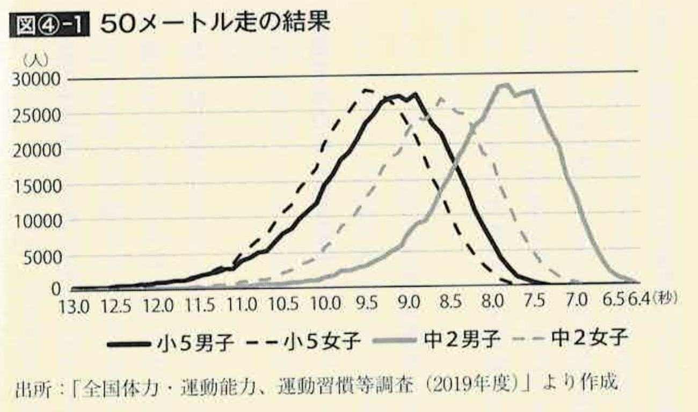
また、脳については「男性は理系の脳、女性は文系の脳」という言説がありますが、現在の神経科学の知見ではそのような明確な脳の性差は確認されていません。男女の脳の違いは、個人差の範囲内に収まるものがほとんどです。
重要なのは、個人への適用を慎むことです。集団の平均的な傾向として男女差が存在したとしても、それを特定の個人にそのまま当てはめることは科学的に正当化されず、ステレオタイプとなります。
（出典：寺町 ④ジェンダー pp.64–71）
非認知能力の男女差
学力（認知能力）だけでなく、非認知能力（自制心・勤勉性・社交性・向社会性など）にも男女差があることが実証研究で示されています。
中室（2024）は埼玉県と群馬県の公立小・中学校・高校生のデータを使った分析を紹介しています。
- 自制心・感情制御：女子の方が高い傾向がある
- 勤勉性・協調性：女子の方が高い（国内外のデータで共通して確認される）
- 自己効力感・活力：男子の方がやや高い傾向がある
- ストレス耐性：男子の方が高い（群馬県高校1年生のデータ）
- 好奇心・寛容さ：女子の方が高い（群馬県データ）
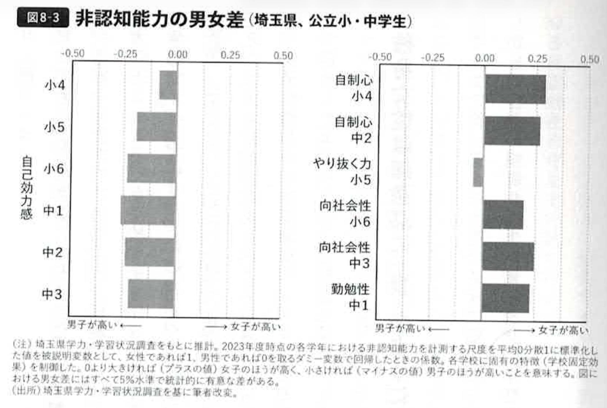
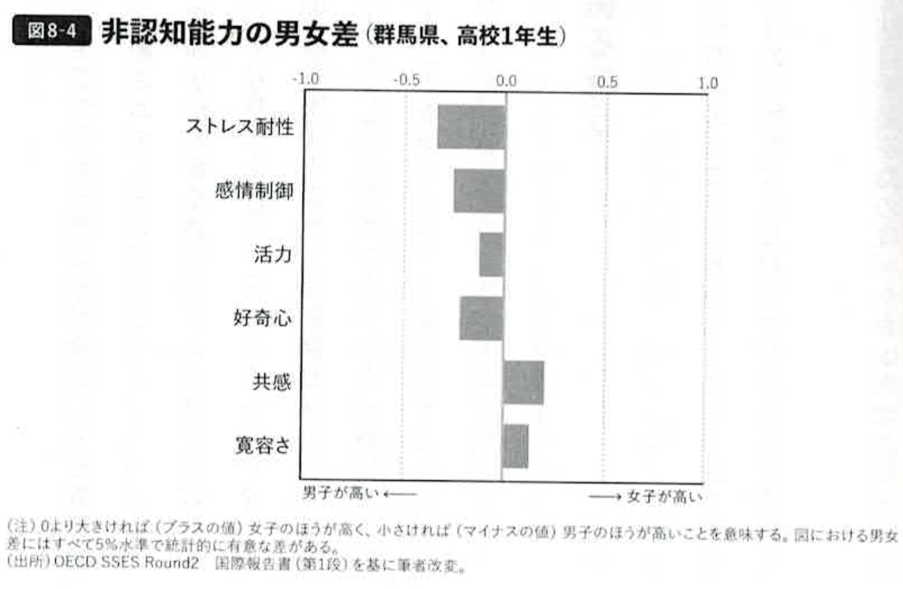
これまでの研究によれば、女子は男子よりも自分に自信がないが、勤勉で協調性が高いことが示されています。女子は男子よりも自己効力感が低く、リスクを回避する傾向が強く、神経質で不安感を持ちやすいことを示した研究があります。一方、勤勉性と協調性が高く、リスクを回避する傾向が強いことも共通して確認されます。これは、女子が「本当に成績が良くない」のではなく、「自分の能力を過小評価しやすい」という可能性を示唆しています。
また、東洋大学の水谷徳子准教授らが日本人の大学生を対象にして行ったラボ実験では、男性は女性が同じグループにいると自信過剰になるのに対し、女性は男性がいない女性だけのグループでこそ自信過剰になることがわかっています。
非認知能力の男女差は生物学的要因だけでなく、社会的・文化的な期待やステレオタイプによって形成される部分も大きいと考えられます。「女子はおしとやかに」「男子は強く」という規範が、子どもたちの自己認識に影響を与えている可能性があります。
（出典：中室 第8章 pp.199–202）
競争心の男女差
教育経済学が近年注目してきたテーマの一つが、競争心（競争への選好）の男女差です。
「女性というのは競争意識が強い」は間違いです。男女の行動や態度面の違いも大きいことがわかっています。特に最近では、男子と女子の選好に差があることを示したエビデンスが蓄積されています。
ニーデルレ教授らのラボ実験
スタンフォード大学のミュリエル・ニーデルレ教授らは、「ラボ実験」と呼ばれる仮想的な実験の方法を用いて、競争心を計測しました。実験では、男女2人ずつ計4人のグループになり、2桁の数字を次々と足し算していきます。5分間解き続け、以下の3回に取り組みます。
- 1回目：歩合制——1問正解するごとに75円（50セント）の報酬
- 2回目：勝者総取り制——4人のグループで最も多く正解した人だけが300円（2ドル）の報酬。2回目の結果をもとに1回目の分も勝者総取り制で計算し直す
- 3回目：選択——歩合制と勝者総取り制のどちらで報酬を受け取るかを自分で選ぶ
3回目に勝者総取り制を選択するのは、誰かとの競争に勝たなければ報酬が得られないことを意味します。実験の結果、男性の73%が勝者総取り制を選択したのに対し、女性はわずか35%しか選択しませんでした（中室 第8章）。
この研究が発表されたあと、世界中で追試が行われました。日本でも同様の結果が得られており、米国・日本の大学生、日本の高校生・中学生、さらにアフリカのマサイ族においても男性の方が競争心が強いという結果が得られています。競争心の男女差は、小学生にすでに表れています（図8-2参照）。
ただし注目すべき例外もあります。図8-2でも示されているように、西アフリカのカーシ族（母系社会）では女性の方が競争心が強いという結果が出ており、競争心の男女差は生物学的に固定されたものではなく、社会・文化的要因によって形成される部分が大きいことが示唆されています。
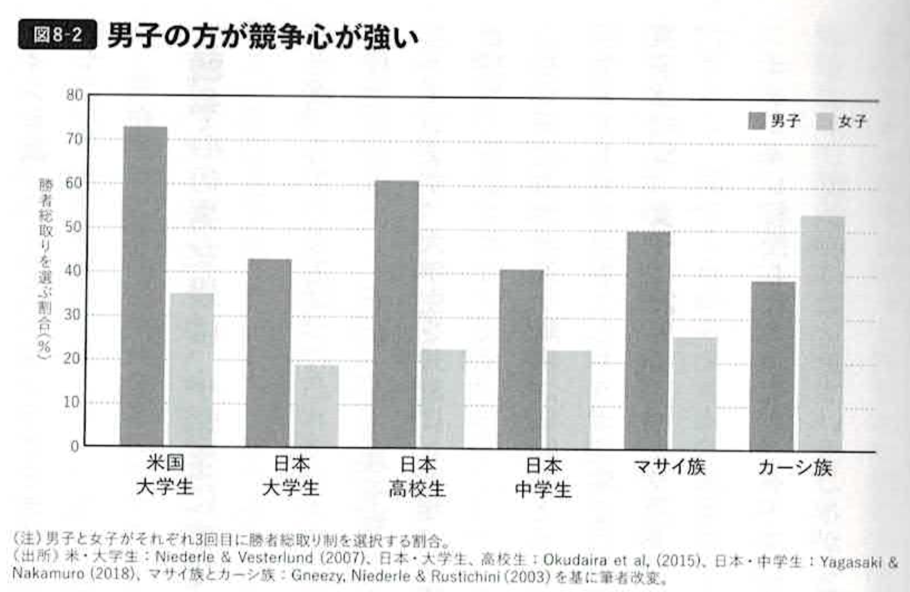
競争心の男女差が進路・収入の格差につながる
この競争心の男女差は、学校外にも影響します。アムステルダム大学のトーマス・ブーザー教授らの研究によれば、競争心が強い男子学生は理系学部を選びやすく、女子学生は競争心にかかわらず理系学部を選びにくい傾向がありました。オランダでは男子学生の方が理系学部を選択し、競争心の強い男子学生の進路選択の約20%が競争心の男女差で説明できると言います。また、就職してから2年後の収入が、勝者総取り制を選択し、競争心が強いとされた卒業生は、歩合制を選択した同級生よりも9%も高いことがわかっています。さらに、就職にも影響があります。アメリカの16の都市で約9000人の求職者を対象にした実験では、周囲の同僚と競い合うような成果報酬を提示した場合に、男性は積極的に応募するものの、女性は消極的で、そもそも応募しなかった人が多かったというのです。
競争心の男女差は、進路選択・職業選択・収入の男女格差につながっている可能性があります。
女子校の生徒の競争心は男子と変わらない
では、教育によって競争心の男女差を縮小することはできないのでしょうか。ブース名誉教授らが、イギリスの8校のうち半数は別学、半数は共学の学校に通う生徒を対象に行った研究では、別学に通う生徒には競争心の男女差が存在しないことを示した研究があります。女子校の生徒は、共学の女子生徒よりも、勝者総取り制を選択する確率が28%も高くなることがわかったのです。そして、この親の選択は、子ども自身の大学進学と強く関連していることが明らかになりました（中室 第8章）。
（出典：中室 第8章 pp.190–200）
10.4 3. 別学 vs 共学
「別学出身者の学力が高い」は見せかけの相関
東大進学者には別学（男子校・女子校）出身者が多い——これはよく知られた「事実」です。しかし、中室（2024）が指摘するように、この相関関係は因果関係を意味しません。
なぜ別学出身者は成績が良さそうに見えるのでしょうか。それは「もともと成績が高い生徒が別学を志望する」という選択バイアス（セレクション・バイアス）が存在するからです。偏差値の高い学校には成績の良い生徒が集まります。その学校がたまたま別学であれば、「別学出身者の学力が高い」という相関が生まれます。しかし、これは別学教育そのものの効果ではありません。
この点を検証するために、アメリカの教育省が2005年に発表した2221の公立学校を対象にしたシステマティック・レビューがあります。共学と別学の比較をしたこの報告書では、英語圏の公立学校を対象にして共学と別学の比較をした2221の研究をまとめています。学力テストの結果に限ってみれば、別学のほうが有利なことを示す研究が多いことがわかります（表7-1）。しかし、こうした過去の研究成果を「偽科学である」と厳しく批判し、話題になりました。アメリカの教育省がレビューの対象にした研究の多くには「見せかけの相関」（一見、2つの変数のあいだに関係があるように見えるけれど、実際には別の現象が影響しているという現象）が生じている、要因が影響していると指摘しています。
テキサス大学のエイミー・ヘイズ准教授が、テキサス州南西部のある公立女子高校のデータを用いて行った研究では、学力テストの結果に限ってみれば別学のほうが有利なことを示す研究が多いことがわかります。しかし、別学が学力を大幅に向上させるという証拠は得られませんでした。少なくとも、東大進学者に別学出身者が多いという事実だけから、別学教育の因果効果を主張することはできません。したがって、「別学だから成績が伸びる」と結論づけることはできないのです。
（出典：中室 第7章 pp.172–177）
ステレオタイプの脅威と別学のメリット
それでも別学に一定のメリットがあるとすれば、それは何でしょうか。研究が指摘するのは「ステレオタイプの脅威（Stereotype Threat）」の回避や、それに関連する学習環境の改善です。
ステレオタイプの脅威とは、ある集団に対する偏見や固定観念が存在する場合に、その集団のメンバーが「自分がそのステレオタイプを証明してしまうかもしれない」という不安を感じ、本来の実力を発揮できなくなる現象です。数学における「女性は数学が苦手だ」というステレオタイプがある場合、女子学生はこの脅威にさらされ、本来の成績が出せなくなることがあります。
経済学者のアリソン・ブース名誉教授（オーストラリア国立大学）らは、イギリスの名門大学で1年生の必修授業である「入門経済学」を受講する学生を対象に、クラスを「女子のみ」「男子のみ」「男女混合」にランダムに割り当てて成績を比較する実験を行いました。結果として、「女子のみ」クラスの女子学生は、「男女混合」クラスの女子学生よりも入門経済学の成績が高くなりました。具体的には、「女性のみ」のクラスの学生のほうが成績が偏差値で2.5高くなり、授業の単位を取得する確率も7.7％高くなりました。さらに、「女性のみ」のクラスに割り当てられた学生は、その後、大学を退学する確率が57％低くなり、成績上位者として卒業する確率が61％高くなったのでした。
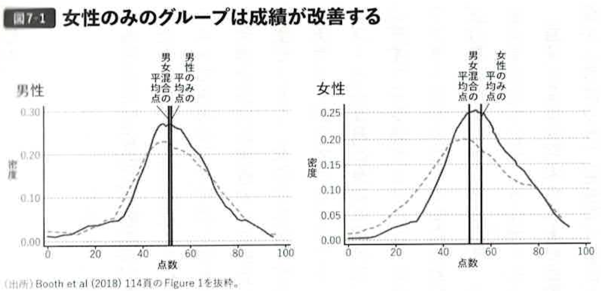
また、小学校の体育の授業を「女子のみ」のクラスに割り当てられた女子児童は、「男女混合」クラスの女子と比べて運動することへの自信が高まったことが示されています。男子はいずれのクラスでも差はありませんでした。
スイスの高校のデータを用いた研究でも同様の結果が確認されています。「女性のみ」のクラスの生徒は「男女混合」クラスの生徒よりも理系科目の成績が良くなりました。
また、アメリカのデータを用いたある研究では、女子大学が共学化することで、理系を専攻する女子学生の割合が30%以上減少したことが示されています。
また、韓国のパク教授らの研究では、別学の生徒は共学の生徒よりも大学入学試験（修学能力試験）の得点が高く、4年制大学へ進学する確率も高いことが示されています。ただし後述するように、この「進学率の優位」が長期的な収入の優位につながるとは限りません。
（出典：中室 第7章 pp.177–183）
別学と将来の収入・家族形成
別学の効果は学力・進学率だけではありません。将来の収入や結婚・出産にはどのような影響があるのでしょうか。
イギリスのデータ（1958年生まれの約4000人を対象に、高校卒業後26〜29歳時点の状況を追跡した研究）によれば、女子校出身者は共学出身者と比較してフルタイムで働く割合が3.2%高く、働く母親に対してより肯定的な態度をとることが示されています。また、競争心やリスクを取る意欲も強くなっていたことがわかりました。しかし、その後の雇用・収入・家族形成にまで必ず良い影響があると断定することはできないということを心に留めておく必要があります（中室 第7章）。
一方、収入についてはどうでしょうか。一橋大学の中澤伸准教授らは、韓国の自然実験のデータ（ソウルの中学生がランダムに別学か共学に割り当てられる制度）を用いて、1990年から2010年までにソウルの高校を卒業し、高校卒業後26〜29歳の約2800人のデータを分析しました。その結果、女子校出身者の平均月収は共学出身者より10.3〜11.5%程度低くなっていることが示されました。修学能力試験の点数や大学進学率では別学が有利だったにもかかわらず、実際の収入では逆転していたのです（中室 第7章）。
さらに、女子校出身者は共学出身者と比較して結婚する確率が8.3%低く、出産して子どもを持つ確率も6.7%低いという結果も出ています。またこうした効果は男子校出身者には見られませんでした（中室 第7章）。
これらの結果が示すのは、別学——特に女子校——に通うことは、修学能力試験・大学進学率では短期的にプラスの効果をもたらす可能性がある一方で、収入・結婚・出産といった長期的な成果については必ずしも有利ではないということです。一連の研究を大掴みにまとめると、「別学が共学より長期的に有利だ」とは言えないというのが教育経済学の現時点での結論です。
（出典：中室 第7章 pp.183–187）
別学と共学、あなたならどちらを選ぶ？——そしてその理由は？
個人ワーク（3分）
もし今から高校を選び直せるとしたら、あなたは別学と共学のどちらを選びますか？また、将来子どもができたら、どちらに進学させたいと思いますか？
- 自分の「直感・経験」による判断と、「データが示すこと」はどのくらい一致していますか？
- この講義で学んだ「相関と因果の区別」「セレクション・バイアス」の観点から、あなたの判断を振り返ってみてください。
ペアワーク（3分）
お互いの考えを共有しましょう。意見が異なる場合、どの部分で違いが生まれていますか？
考え方の整理
「東大進学者には別学出身が多い」という事実は本当です。しかしその原因は、「別学教育そのものの効果」ではなく、「もともと成績の高い生徒が別学を選ぶ」というセレクション・バイアスである可能性が高いことを、この章では学びました。
判断の軸として考えられること：
- 短期的効果（学力・自信）：一部の研究でステレオタイプの脅威の軽減による効果が示されているが、厳密な因果推定では差がないことが多い
- 長期的効果（収入・家族形成）：女子校は収入・結婚・出産の確率を下げる可能性がある
- 個人差：平均的な効果が小さくても、特定の生徒（自信が低い女子など）には効果がある場合がある
データを見て「別学の方がいい」とも「共学の方がいい」とも一概には言えません。これは教育経済学の結論の一つです。「エビデンスを読む力」と「エビデンスだけでは決まらない価値観の部分」を区別することが重要です。
10.5 賃金格差の現状と経済学理論
男女間賃金格差の現状
教育における男女格差が縮小・解消されつつある一方で、労働市場では依然として大きな男女格差が存在します。
日本の現状
松塚（2022）によれば、日本の所定内給与額の推移を見ると、1970年代中盤から1990年代中盤まで男女間の賃金差は拡大を続け、その後は縮小傾向にあるものの、2019年時点でも男性平均338千円に対して女性は平均251千円と、男性を100とした場合に女性は74の水準にとどまっています（松塚 第9章）。
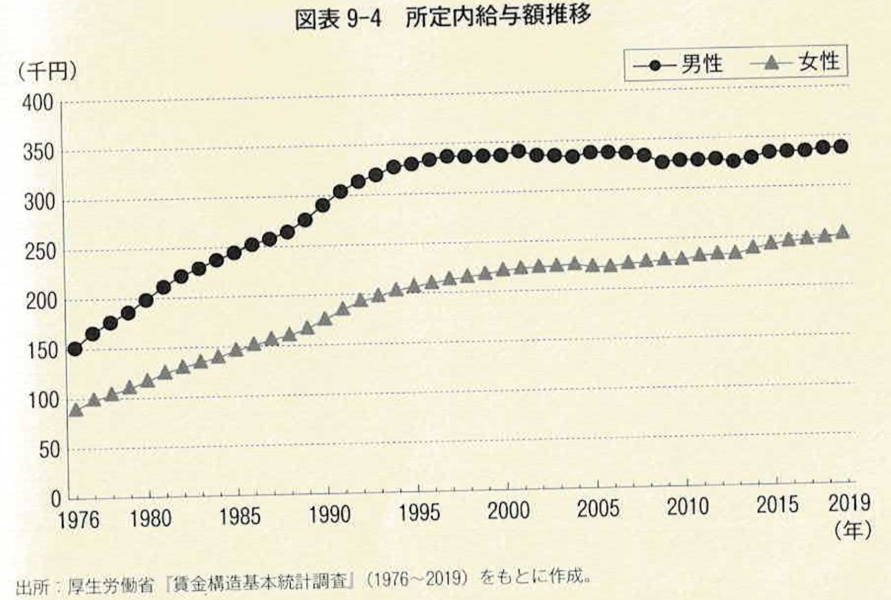
国際比較
OECD（2021）のデータによる国際比較では、日本の男女間賃金格差（約23.5%）は韓国（34.1%）に次いで主要先進国の中で2番目に大きく、OECD平均の12.6%を大きく上回っています。最も格差が小さいイタリアの5.7%と比べると、日本の格差がいかに大きいかがわかります（松塚 第9章）。
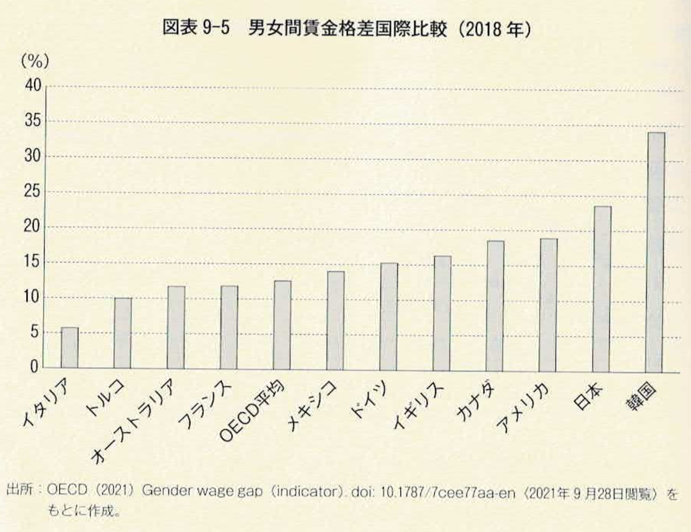
（出典：松塚 第9章 第1節、pp.224–228）
賃金格差を説明する枠組み
なぜ男女間に賃金格差が生まれるのでしょうか。松塚（2022）はファーバー（Marianne Ferber）の枠組みに基づき、賃金格差の要因を「観察できる（Observable）要因」と「観察できない（Unobservable）要因」に分けて整理しています。
観察できる要因
- 学歴：就学年数・専攻・学位・学校の難易度など
- 職歴：年功・経験・訓練——人的資本的要因
- 雇用環境：産業・職種・企業種
これらは測定可能であり、分析の対象となります。例えば、産業や職種によって賃金水準が異なり、女性が雇用されやすい産業・職種の賃金が男性中心の産業・職種よりも低い場合、女性の平均賃金は男性を下回ります。また年功については、出産や育児に伴う休職・離職によって女性の職歴年数が男性より短くなりやすく、これが賃金格差の一因となります。
観察できない要因
- 素質・指向的特徴・非認知能力・モチベーション・エネルギー
- そして「差別」
観察できない要因の中でも特に重要なのが「差別」です。差別は識別しにくく、見えないからこそその影響は限りなく拡大する恐れがあります（松塚 第9章）。
（出典：松塚 第9章 第2節、pp.228–233）
差別の経済学
「差別」という曖昧な概念を経済学的に解説したのが、ゲイリー・ベッカーの「差別の経済学」（Becker, 1957）です。ベッカーの問題意識は「女性の賃金が平均的に少ないのは、実質的生産性が低いからか、女性の労働が軽視されているからか、あるいは差別からか」というものでした。
ベッカーは差別のかたちとして以下の3種類を提示しました。
（1）嗜好的差別（Taste discrimination）
使用者・同僚・顧客などが、特定のグループ（女性）を採用・共同作業・取引することに心理的コストを感じ、女性を採用することを嫌う場合に生じます。松塚によれば、佐野（2005）の研究は日本の労働市場において雇用主の嗜好に基づく女性差別による女性の過少雇用が存在し、その傾向は競争的でない産業の企業ほど強いことを示しています（松塚 第9章）。
具体的には3つのパターンがあります。①男性が多数派の職場では同属意識・仲間意識が生まれ、女性を採用しようとしない。②多数派である男性の意向に沿わなければ生産性が上がらないため、雇用主は男性を優先する。③得意先が「差別屋（Discriminator）」である場合、女性採用に消極的になる。
（2）統計的差別（Statistical discrimination）
これまで定量的に明らかにされてきた統計的傾向（女性は結婚や出産を機に離職する傾向が高いなど）をもとに女性を「一括り」に認識し、個々の女性に対してもその認識を適用するものです。
この場合の雇用主の経済合理性は異なります。もしその「思い込み」が実態を反映している場合には、企業が損をしないために女性を採用しないという理由は通ります。しかし思い込みにすぎない場合——例えば勤務時間が短くても時間当たりの生産性が男性社員より女性社員の方が高い場合に女性を採用しないのは——経済的に損をします。損が確かに発生するために女性を採用しないのは経済合理性がありますが、思い込みだけで採用しない場合は、企業は損をし、しかも差別的な行為をしたとみなされます（松塚 第9章）。
（3）買い手手独占的差別（Monopsony discrimination）
買い手手独占とはここでは企業あるいは雇用主側の独占的優位性を指します。嗜好的差別や統計的差別によって女性の雇用機会が限定されてくると、女性は特定の職場と職業に集中します。そこには成り手が待機しているために安い賃金でも雇い入れることができます。「嫌だったら辞めてもいい」と安い賃金が提示されます。その賃金は限界生産性を大きく下回るかもしれませんが、その価格で雇用されうるために安い賃金は継続します（松塚 第9章）。
| 差別の種類 | メカニズム | 雇用主の経済合理性 | 対処策 |
|---|---|---|---|
| 嗜好的差別 | 心理的コスト（採用・共同作業を嫌う） | 損をしても差別を選ぶ | 競争的市場の強化 |
| 統計的差別 | 集団統計への思い込みによる個人への適用 | 思い込みが正しければ合理的；誤りなら非合理 | 個人能力の可視化・実績評価 |
| 買い手独占的差別 | 雇用機会の限定による交渉力の剥奪 | 安い賃金で雇えるため合理的 | 雇用機会の拡大・参入障壁の除去 |
（出典：松塚 第9章 第2節、pp.231–234）
10.6 日本女性のキャリア中断
M字カーブと勤続年数の短さ
日本女性の賃金格差の最大の原因として、松塚（2022）は勤続年数の短さを挙げています。役職の違いによる影響が10.5と最も大きく、次いで勤続年数の違いによる影響が4.3です。この役職と勤続年数の影響が際立って大きいことが確認できます（松塚 第9章）。
日本では女性の95%以上が新卒で職を得るものの、出産・育児によるキャリア中断によって多くの女性が離職します。その後、労働市場に戻ったとしても多くの女性は離職前の仕事には戻れず、新規にパートタイムや非正規雇用の職に就く者が多いです。これによって年功を積み重ねることの多い男性の賃金との間に差が生まれます。20代後半から30代にかけて出産と育児に伴い減少し、再就労に伴い上昇することから「M字型曲線」と称された日本の女性の労働力率は近年台形になっています（松塚 第9章）。
しかし「M字型の窪みを埋めた女性の多くが非正規雇用で入職していること、そのような入職の多くが夫である男性の所得が増えなくなり、家計補助のためであること」が指摘されています（松塚 第9章）。
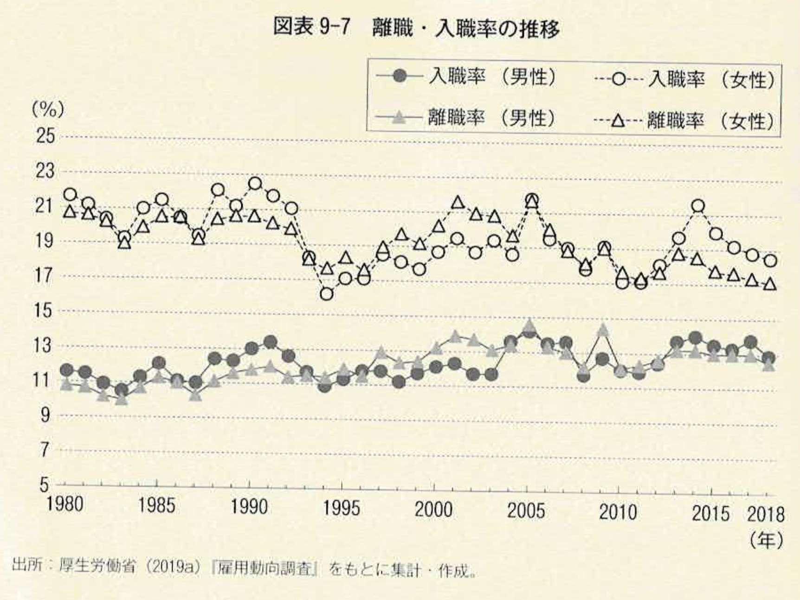
賃金格差が少ない職業とは
女性にとって就労条件が良い職業はどのようなものでしょうか。松塚（2022）は厚生労働省「賃金構造基本統計調査」をもとに職業ごとの男女差を分析しています。
勤続年数が長く、給与が高めの職業として挙げられているのは、弁護士・公認会計士・税理士・不動産鑑定士・記者・一般建築士・電車運転士・福祉施設介護員・航空機操縦士・営業用大型貨物自動車運転者などです。これらは年功の影響を受けにくく転職に強い「一般的技能」の性質が強い職業です。
勤続年数は短くても給与が高い職業としては、航空空客室乗務員・歯科衛生士・社会保険労務士・薬剤師・歯科医師・医師などが挙げられています。特に歯科衛生士は転職しても市場価値が下がりにくい典型的な例です。歯科衛生士は特定の病院やクリニックだけでなく、歯科衛生処置を必要とするすべての病院やクリニックで同等の生産性を発揮することができます（松塚 第9章）。
女性の雇用条件を改善するためには、産業・制度の改革が必要な職業もある一方で、女性自身が「一般的技能」を習得してそれを求める職業に就くことも有効な戦略です。そして、その一般的技能を獲得するための機会を提供するのが高等教育の重要な役割の一つです。
（出典：松塚 第9章 第3節・第4節、pp.234–243）
10.7 政策的対応——アファーマティブ・アクションとクオータ制
女性リーダーをいかに増やすか
ここまでの議論を踏まえると、女性の賃金格差・キャリア中断・リーダー職の少なさには複合的な要因があることがわかります。「女性活躍」は重要な社会課題です。しかし日本の女性の専門職・管理職・政治家などはほかの先進国と比較すると依然として少ないことが知られています。2023年末に発表された世界経済フォーラムの「ジェンダーギャップ指数」の日本の順位は146か国中なんと125位でした。
これに対する政策的対応として、アファーマティブ・アクションとクオータ制があります。
アファーマティブ・アクションとは、女性の進学・就職・昇進などに数値目標を設けたり、女性採用に数値目標を置いたりする積極的な差別是正措置です。たとえば、女性の進学や就職、昇進などに「女性枠」を設けたり、女性登用に数値目標を設けるものです。
アファーマティブ・アクションに反対する論者の多くは、「十分な経験や資格のない女性が、十分な経験や資格を持つ男性を差し置いて地位や職を得ることになる『逆差別』」の問題を指摘します。
しかし、スウェーデンのデータを用いた自然実験によって、女性取締役の数値目標を設けたことで、学歴・資格・経験などが十分ではない女性が取締役に抜擢され、企業価値が12.3%低下したことを示す研究もあります。
しかし、アファーマティブ・アクションの導入によって、そうした女性を採用することができないとすれば、そもそも応募すらしないという女性が多いとすれば、アファーマティブ・アクションがあると、有能な女性が、昇格や就職にチャレンジするようになったことが示されています（中室 第8章）。
クオータ制はアファーマティブ・アクションの1つで、議員や役員などに占める女性の比率に数値目標（クオータ）を設けて、女性候補者を一定数確保するものです。
スウェーデンでは比例代表制の候補者を男女で均等にするというクオータ制が導入されました。このクオータ制の導入が、実力のない女性議員を増やしたかどうかを検証した研究では、クオータ制が実力のある男性議員を増加させ、凡庸な男性議員の撤退を促したことが明らかになりました（中室 第8章）。
ロールモデル効果
クオータ制の副次的な効果として注目されるのがロールモデル効果です。
インドのある地域では、約3分の1の地方議会をランダムに選び、クオータ制の導入が始まりました。ノーベル経済学賞受賞者でもあるマサチューセッツ工科大学のエスター・デュフロ教授らが、クオータ制の効果を調べたところ、女性議長が誕生した地域では、11〜15歳の女子の学歴が8ポイントも増加したことを示したエビデンスがあります（中室 第8章）。
これは「ロールモデル効果」だと考えられます。政治的なリーダーシップを発揮している女性政治家を身近に見ることで、若い女性が「自分もできる」と感じ、教育や職業へのaspiration（志望・意欲）を高めるというメカニズムです。
これ以外にも、女性の政治家のクオータ制の導入が後進の女性たちの進路に影響を与えることを示すエビデンスがあります。女性が少ないことで知られる経済学の知識を武器にキャリアを築いている女性の卒業生の話を聞くチャンスがある地域では、経済学を専攻する女性が8ポイントも増加したことが示されています。これもロールモデル効果の一形態です（中室 第8章）。
また、善きロールモデルは、後進の女性たちの進路に影響を与えるということを示すエビデンスがあります。フランスでの研究でも、女性科学者による1時間の講演を受けた高校生女子のSTEM分野進学率が3.4ポイント上昇したことが報告されており（UNESCO GEM Report 2025）、ロールモデルの存在が進路選択に与える影響は小さくありません。
これらの研究は、アファーマティブ・アクションをどのように実装していくかを考えるうえできわめて重要ではないでしょうか（中室 第8章）。
（出典：中室 第8章 pp.207–211）
参考：【理系】大学入試「女子枠」に賛否…理系の女性活躍どう実現？男性冷遇の可能性は？│アベプラ
独身女性が無意識に「妻」のように振る舞う
政策論を考えるうえで、もう一つ重要な視点があります。中室（2024）が紹介するシカゴ大学のレオナルド・バースティン教授らの研究は、女性の行動や態度に直接の影響を与えてきたものとして「婚姻市場の存在」に焦点を当てています。
バースティン教授らは、アメリカのある名門大学のMBAプログラムの学生を対象に実験を行いました。MBAとは経営学の大学院修士課程で、数年間の実務経験のある人が入学するのが一般的です。対象となったMBAの学生は、平均年齢28歳の男女で、MBAプログラム在学時の同級生と結婚した卒業生の実に31%の女性と16%の男性が、同じ大学のMBAプログラムに在籍していたということになります。バースティン教授らは、このMBAの学生を対象に、卒業後に希望する年収や、労働時間、出張などの回数に加えて、自身の向上心やリーダーシップについても自己採点してもらいました。
アンケートには2種類あり、「記名のまま授業内で公開されるもの」と「匿名で授業内で公開されるもの」がありました。どちらを受け取るかはランダムに決定されたので、自分がどう回答したかという内容が同級生に知られるかどうかが異なります。
バースティン教授らは、このアンケート調査の回答を分析しました。男子学生の回答は、記名か匿名かにかかわらず差はなく、また既婚の女子学生の回答にも差はありませんでした。
ところが、独身の女子学生の回答だけには大きな差が生じていたのです。匿名のアンケートに答えた独身女性の希望年収の平均は1,965万円（13万1000ドル）だったのに対し、記名のアンケートに答えた独身女性の平均はそれよりも270万円（1万8000ドル）も低くなっていました。さらに、週あたりの労働時間が4時間少なく、月あたりの出張回数も7日少なく、「向上心」や「リーダーシップ」も低く自己申告していました。
なぜこのような結果になったのでしょうか。バースティン教授らは「男性の目を意識したのではないか」という仮説を立て、もう1つの実験を行いました。独身の女子学生たちは、「女性のみ」か「男性のみ」のグループにランダムに割り当てられ、「高収入で長時間労働」の仕事と「低収入で短時間労働」のいずれかを望むかを答えさせたのです。
そうすると、独身の女子学生が「高収入と長時間労働」の仕事を選んだのは「女性のみ」のグループに割り当てられた場合は68%だったのに対し、「男性のみ」のグループに割り当てられた場合はわずか42%しか選ばなかったのです。
その証拠に、1つ目の実験における「文章力」についての自己採点は、記名・匿名、独身・既婚にかかわらず差はありませんでした。「文章力」は労働市場では有利になりますが、結婚市場では特に有利でも不利でもないからです。一方、「向上心」や「リーダーシップ」は労働市場では有利になりますが、結婚市場では「男性から見て魅力的に映るような振る舞いをしなければならない」というプレッシャーにさらされ、独身女性はそれを抑制したのです（中室 第8章）。
女性がリーダーに選ばれやすい選抜の方法がある
バースティン教授らの研究は、婚姻市場の存在が女性の行動に直接影響を与えることを示しました。就学期の子どもたちが「結婚」を意識する場面は多くはないにせよ、「異性からモテたい」という願望はあるはずで、結婚する前に進学や就職に関する多くの意思決定をすることになります。
男子に見られていると思えば、女子は積極的にリーダーシップを取ったり、男子が得意とされる理系科目を勉強したりすることを避けてしまうかもしれません。これまで紹介したエビデンスを思い出してみれば、不安感を持ちやすく、リスク回避傾向の強い女子生徒が、競争心の強い選抜を避けることは容易に想像できます。だから、小学校の生徒会長では選挙が多く、中学校では生徒会長を選ぶ方法として、選挙だけでなく、小学校と同じく互選という方法も選択肢とすることで、女子がリーダーシップを発揮する可能性が高まるかもしれません（中室 第8章）。
女性が能力・意欲を持っているにもかかわらず、それを発揮できない背景には、個人の「選好」だけでなく、婚姻市場・社会的規範・ステレオタイプが複合的に作用している可能性があります。これは政策設計において重要な含意を持ちます。
（出典：中室 第8章 pp.202–208）
大学入試の「女子枠」をどう考えるか？
背景
近年、日本の一部の大学・学部で理工系を中心に女子学生を対象とした入試枠（「女子枠」）を設ける動きが広がっています。2024年度には東京工業大学・芝浦工業大学・岡山大学などが導入しました。
女子枠を支持する立場からは、「理工系における女性の割合が著しく低いのは、社会的・文化的要因によるものであり、積極的な是正措置が必要だ」という意見があります。一方、反対する立場からは、「同じ試験で男子より低い点数でも合格できるのは不公平であり、男子への逆差別にあたる」という意見があります。
この講義では、競争心の男女差やステレオタイプの脅威など、女性が理系進学を選びにくくなる構造的な要因を学びました。また、アファーマティブ・アクションがかえって有能な女性の挑戦を促す可能性があることも示されています。
個人ワーク（5分）
大学入試における女子枠の導入について、あなたはどのように考えますか？以下の点を参考に、自分の意見とその理由を書いてください。
- 女子枠の導入に賛成ですか、反対ですか？あるいはその中間ですか？
- その立場をとる理由は何ですか？
- この講義で学んだ内容（競争心の男女差・ステレオタイプの脅威・統計的差別など）は、あなたの意見にどのように影響しましたか？
グループワーク（5分）
グループ内で意見を共有し、以下の点について話し合ってください。
- 意見が異なる場合、その違いはどこから来ていますか？（価値観？データの解釈？）
- 「公平」とはどういう意味だと思いますか？結果の平等と機会の平等は同じですか？
考え方の整理
女子枠をめぐる議論は、「公平とは何か」という根本的な問いに関わっています。教育経済学の視点からいくつかの論点を整理します。
女子枠を支持する根拠
この講義で見てきたように、女性が理系進学を選ばない背景には、個人の能力や意欲の問題ではなく、ステレオタイプの脅威・競争心の男女差・婚姻市場のプレッシャーといった構造的な要因があります。これらは「自由な選択」ではなく「制約された選択」です。女子枠はこの構造的な不利を補正するための手段として正当化できます。また、ニーデルレ教授らの研究が示すように、女子校のように競争的な選抜を避けられる環境が整うと、女性の競争心や自信が男子並みに高まることがわかっています。
女子枠に反対する根拠
スウェーデンの取締役女性クオータ制の研究では、能力・経験が十分でない女性が登用されることで企業価値が下がった事例も報告されています。また、同じ基準で競争できないことが、女性自身の自信や社会的評価を損なうという懸念もあります。さらに、入学後のカリキュラムや職場環境が変わらなければ、女子枠は「入口」の問題を解決するだけで、本質的な格差解消にはならないという指摘もあります。
教育経済学が示すこと
賃金格差と同様に、この問題も「個人の選択・差別・構造的問題・ステレオタイプ」のすべてが絡み合っています。女子枠だけで問題が解決するわけではなく、理系教育の中でのロールモデルの提供、ステレオタイプへの介入、職場環境の改善など、複合的なアプローチが必要です。
「公平」には機会の平等（同じルールで競争する）と結果の平等（格差を是正する）という2つの考え方があります。どちらを重視するかによって女子枠への評価は変わります。重要なのは、自分がどちらの「公平」を前提にして議論しているかを自覚することです。
10.8 まとめ
本章では、教育とジェンダーの関係を、世界の現状・男女の能力差・別学vs共学・賃金格差・キャリア中断・政策という流れで検討してきました。主要な論点を整理します。
世界と日本の現状
世界では教育参加における男女格差は平均的には縮小しているが、地域によって大きく異なります。サブサハラ・アフリカでは女子が不利な一方、ラテンアメリカでは男子の不就学が深刻です。高等教育では女性が多数派になる国が増えており、男女差の問題は「就学するかどうか」から「何を学ぶか」へと移行しています。日本のジェンダーギャップは教育では小さいが、経済・政治では世界最低水準にあるという構造的な特徴があります。
男女の能力差と別学vs共学
男女の学力差・非認知能力の差は存在しますが、個人差の方がはるかに大きく、ステレオタイプの適用には慎重であるべきです。競争心の男女差は生物学的に固定されたものではなく、文化・社会的要因によって形成されます。別学に関しては、「別学出身者の学力が高い」は選択バイアスによる見せかけの相関であり、厳密な因果推定では別学と共学の学力差はほぼ認められません。ステレオタイプの脅威の軽減には一定の効果があるものの、長期的な収入・家族形成への効果は必ずしも肯定的ではありません。
賃金格差とその経済学的理論
日本の男女賃金格差はOECD加盟国の中で韓国に次いで大きく、その主な要因は勤続年数の短さと役職の差です。賃金格差は嗜好的差別・統計的差別・買い手独占的差別という3種類の「差別」のかたちで説明できます。同時に、婚姻市場・ステレオタイプ・社会規範が女性の行動・選択を制約している可能性もあります。
政策的対応
クオータ制は「凡庸な男性議員の撤退を促す」という予想外の効果を持つことが示されています。ロールモデル効果は実証的に確認されており、女性リーダーの存在が若い世代の志望・進路に影響を与えます。賃金格差の解消には個人の選択・差別・構造的問題・ステレオタイプのすべてに同時にアプローチする必要があります。
本章の内容は以下の資料に基づいています。
中室牧子『「学力」の経済学』第7章「別学と共学、どちらがいいのか？」第8章「男子と女子は何が違うのか？」（ディスカヴァー・トゥエンティワン、2024年）
別学vs共学の国際的実証研究（韓国・スイス・英国・ペンシルベニア等）、ステレオタイプの脅威、競争心の男女差（ニーデルレ教授らのラボ実験）、非認知能力の男女差、独身女性の「妻」的行動（バースティン教授）、クオータ制・ロールモデル効果。松塚ゆかり（編）第9章「ジェンダーをめぐる課題と教育経済学」
日本・OECD諸国の賃金統計、M字カーブとキャリア中断の実態、賃金格差の枠組み（ファーバー）、差別の経済学（嗜好的・統計的・買い手独占的差別）、女性にとって就労条件の良い職業分類。佐野晋平 第5章「社会の変化への対応と教育」第3節「教育におけるジェンダーの問題」
世界のジェンダーギャップ指数（日本の位置づけ）、日本の高等教育における男女差（学部選択・STEM）、男女差を縮小するための政策手段。寺町晋哉「④ジェンダー——『性別』があふれる学校は変われるのか」
セックスとジェンダーの概念整理、教育達成の男女格差（大学進学率）、脳・体力の男女差、幼児教育・学校内ジェンダー（ステレオタイプ・性的マイノリティ）。UNESCO Global Education Monitoring Report: Gender Report 2025
世界の教育参加・修了・学力・安全・リーダーシップに関する最新データ。
10.9 参考文献
- Becker, G. S. (1957) Economics of Discrimination. 2nd edition, Chicago: University of Chicago Press.
- Becker, G. S. (1965) A Theory of Allocation of Time. Economic Journal, 75(299), pp.493–517.
- Becker, G. S. (1993) Human Capital, 3rd edition, Chicago: University of Chicago Press.
- Ferber, M. A. & Lowry, H. M. (1995) The Sex Differential in Earnings: A Reappraisal. In J. Humphries (ed.) Gender and Economics, pp.429–439, Vermont: Edward Elgar.
- Ferber, M. A. & Nelson, J. A. (1993) Beyond Economic Man: Feminist Theory and Economics. Chicago: University of Chicago Press.
- Horner, M. (1968) Sex Differences in Achievement Motivation and Performance in Competitive and Non-competitive Situations. Ph.D. Dissertation, University of Michigan.
- Niederle, M. & Vesterlund, L. (2007) Do Women Shy Away from Competition? Do Men Compete Too Much? Quarterly Journal of Economics, 122(3), pp.1067–1101.
- OECD (2021) Gender Wage Gap (Indicator). doi: 10.1787/7cee77aa-en.
- UNESCO (2025) Global Education Monitoring Report: Gender Report 2025. Paris: UNESCO.
- 岩田正美・大沢真知子（編著）（2015）『なぜ女性は仕事を辞めるのか——5,155人の軌跡から読み解く』青弓社
- 厚生労働省（2019a）『雇用動向調査』
- 厚生労働省（2019b）『賃金構造基本統計調査』
- 佐野晋平（2022）「社会の変化への対応と教育」松塚ゆかり（編）『現代の教育経済学』第5章、ミネルヴァ書房
- 寺町晋哉（2021）「④ジェンダー——『性別』があふれる学校は変われるのか」志水宏吉ほか（編）『教育の比較社会学』所収
- 中室牧子（2024）『「学力」の経済学』ディスカヴァー・トゥエンティワン
- 山口一男（2007）「男女の賃金格差解消への道筋——統計的差別に関する企業の経済的非合理性について」RIETI Discussion Paper Series 07-J-038.
- 山口一男（2017）『働き方の男女不平等——理論と実証分析』日本経済新聞出版社
- 松塚ゆかり（2022）「ジェンダーをめぐる課題と教育経済学」松塚ゆかり（編）『現代の教育経済学』第9章、ミネルヴァ書房